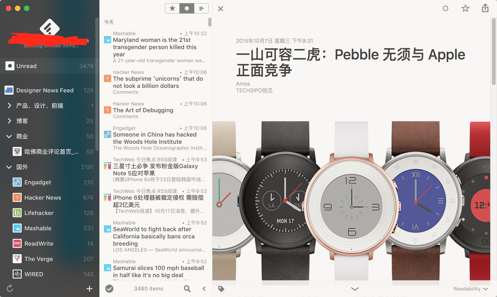
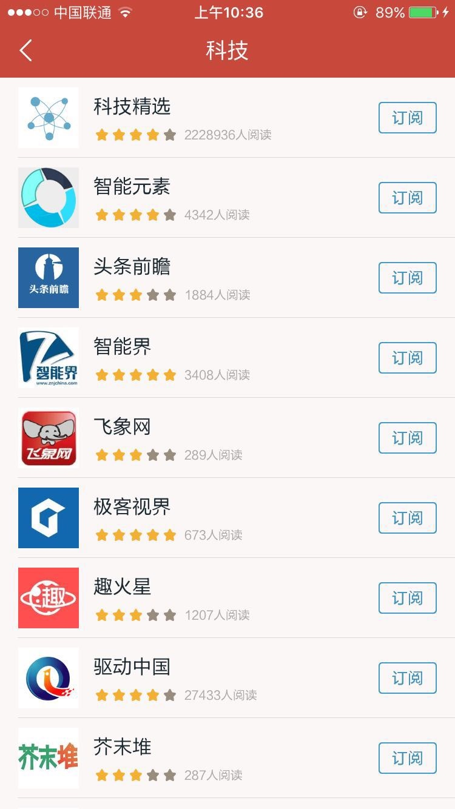
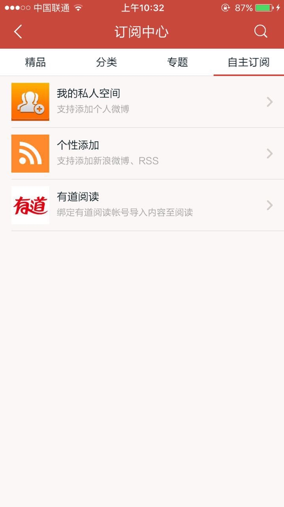

作为一名产品经理，对工作效率提升的不懈追求应该是必备的素质之一。我们在工作时，为了提升自己的工作效率，就得有计划、方法，执行，总结。方法论更多的是计划和方法，而工具则是更好的帮助你贯彻执行。关于方法层面，我在之前的文章里面有提到过一些基本方法，在此就不多说了。
因为自己坚持写作已经有很长的一段时间，且每周花在写作上面的时间相对比较多，方法说完了以后，就准备写一些工具类的系列文章与大家分享，这一系列的开始是写作者的效率工具。因为图片较多以及篇幅较大，所以本篇主要写一下写作者的工具箱的第一篇：阅读
0.关于阅读
一般来说，得看了十万字或者得有远远大于这些时间的经历才能够写出一千字。而且质量越高的文章，这个比例就会越大，要想完成高质量的写作的过程，就需要在上游控制，即大量的阅读。
1、Rss阅读
虽然博客时代已经过去，但是仍然无法否认博客阅读的价值，仍然有大量的作者仍然坚持在博客上编写文章，所以RSS阅读仍然是我常用的阅读之一。
1.1.收费软件Reeder
Reeder我主要是在桌面端(电脑)上使用

Reeder是我用过最好用的PC端RSS阅读器，它不光在界面展示上做的非常清晰。而且还支持将文章保存到Evernote、Pocket、分享到twitter内

我一般都是在下班前扫一下Reeder，觉得有意思的，会放到Pocket里面，在回家的路上，或者吃饭的时候慢慢看。觉得可以深入研究的，则保存到印象笔记里面进行后续的处理。
1.2.免费软件网易云阅读
网易云阅读，我主要是在移动端（手机）上使用

网易云阅读一个非常好的就是，可以自己按照分类订阅自己感兴趣的源，而且源非常丰富

在我刚刚入门做产品经理的时候，关注了科技板块的所有帐号，每天睡觉前看一遍，持续看了半年，收获很大，现在感觉重复的信息太多，不需要这么干了，但初学者可以尝试一下。

同时，它更赞的功能是，可以自定义添加订阅的源

这样，基本上网易云阅读就可以覆盖我所有想要定期关注的媒体、博客等，除了书本和文章之外的所有资源了。
2.文章阅读
2.1.免费软件Pocket

只需要你在Chrome或者Fixrefox上安装一个插件，它就能够将网页上的文章很方便的重新排版成好看的格式。之后你可以登录到Pocket上，在空闲的时候去阅读文章，不过它不是存储到Pocket服务器上，如果链接失效，就看不了这篇文章了，如果想要存储到Pocket服务器上，则需要你购买会员（不过一般都用不上，我基本看完了都会放到印象笔记上去）。
包括知乎、网易云阅读等阅读应用都支持存储到Pocket上去，它移动端的基本功能和界面都和PC端区别不大，就不贴图了。
关于这些稍后阅读类的软件，还有：instapaper、readability等，基本上功能类似，看你喜欢哪一种了
2.2.微信
而现在现在由于加了一些高质量的微信好友，基本上我移动端的信息来源都变成了微信，Pocket也少用了，我用的更多的是微信的收藏功能，可以方便的加标签和搜索，可以满足轻量级的阅读需求，非常好用（当然这个的前提是，读文章的时候没人打扰你，哈哈）。

2.3.免费英文阅读软件Seed
除了中文的阅读，我还需要补充一些英文阅读，英文的阅读方面我比较轻，目前使用的是Seed

它会让你关注一些种子用户（但是目前还不能引入微信和微博的线下关系），根据他们的阅读，来给你推荐文章，同时，每个频道会有几个固定的阅读渠道可以让你选择添加和删除，我还没找到可以自己添加来源的渠道（可能是基于阅读体验的考虑），它很赞的一个功能是可以翻译和添加生词本，这点我非常喜欢。

3.书本阅读
3.1.免费阅读软件多看阅读
多看团队是做kindle系统起家的，后来他们的团队被小米收购，开始做多看阅读。我上学的时候，用多看的比较多，现在用的少一些了，因为书相对比较少……
多看的产品有几个点非常赞。一个是wifi传书，一个是PDF的重新排版，前两者我现在几乎不用了，而我现在最经常用的是文章的批注和读书笔记同步到印象笔记的功能。它导出评论和批注到Evernote不光方便快捷，而且它的排版也非常好。
书中的读书笔记

印象笔记内的界面

总得来说，细节方面做的非常好。
3.2.免费阅读软件kindle
我现在最常用的还是Kindle软件，虽然它阅读体验差，导出批注不方便，经常出bug，不支持读盗版书，手机端也没商城……
但是有一点多看做不到，那就是它的书多而且便宜啊……

而且亚马逊最近老是出活动,不得不由衷的感慨下，价格才是最好的杠杆啊！

4.总结
通过这些工具，配合线下每天读过的书，基本上可以保障我平均每日10w+字数的阅读量。然而，阅读量仅仅只是产生知识的基础。关于写作，我在我的知识的管理里面写到过，知识的管理分为如下的几个过程：阅读、采集、整理、输出（写作、扯淡），没有沉淀的学习都是耍流氓。所以接下来的写作者的工具箱系列，我会按照知识管理的过程来写一下我是如何结合工具进行写作的，这篇说完以后，阅读到的信息变为你真正的知识，还需要接下来的几个环节：采集，整理，和最后的输出，下一篇我再跟大家分享一下我是如何用工具来采集和处理海量信息的。